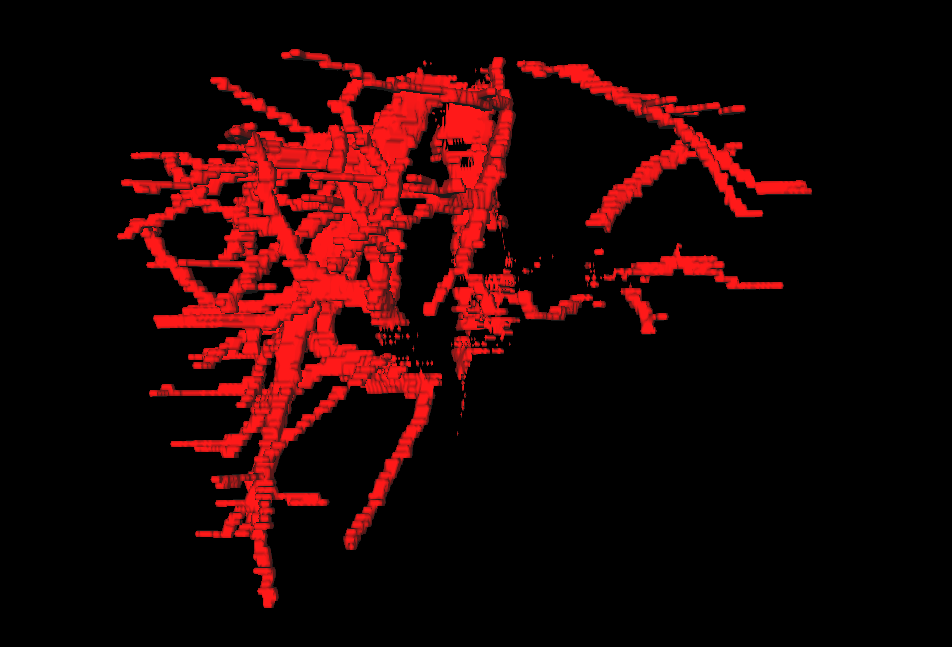
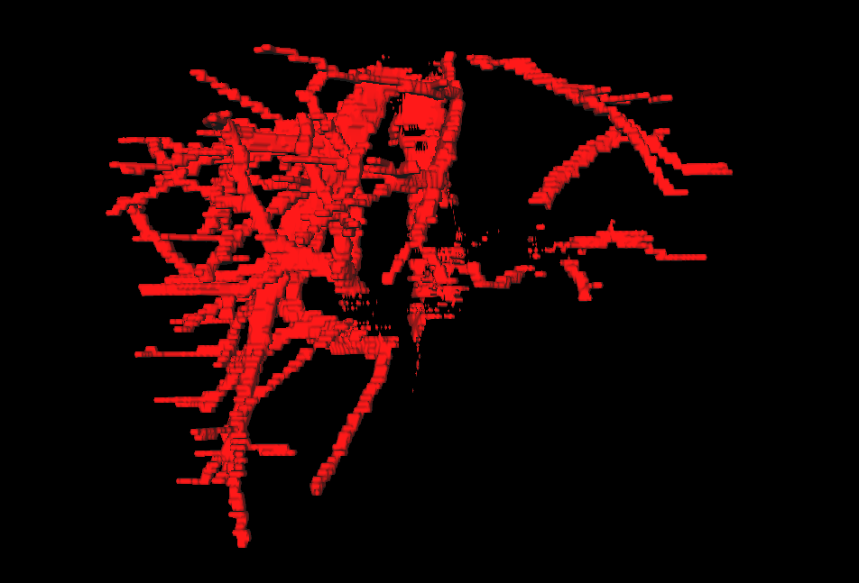

Portfolio
Spinning Mug
I’m creating a Vulkan renderer from scratch to learn graphic programming.
Marching Cubes
I implemented the marching cubes algorithm and used it to visualize 3d segmentation of medical images. 
I’m creating a Vulkan renderer from scratch to learn graphic programming.
I implemented the marching cubes algorithm and used it to visualize 3d segmentation of medical images. 